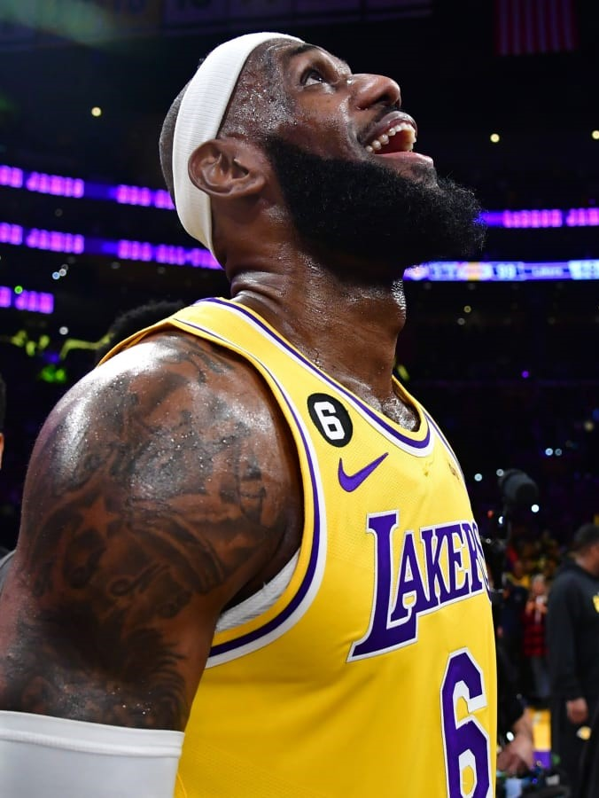
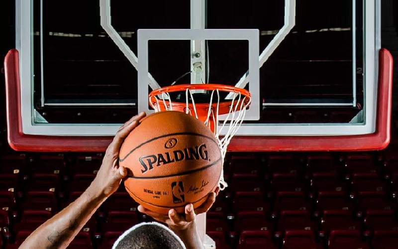

Ultime notizie pallacanestro italiana:
Basket: storia e sostenibilità nelle nuove canotte azzurre
BOLOGNA, 20 FEB - Per quattro anni la Federazione Italiana Pallacanestro e Macron si legano sulle maglie di tutte le Nazionali Azzurre (Senior, Junior e 3x3, sia maschili sia femminili). La partnership ha preso il via il primo gennaio 2023 e oggi è stata sancita ufficialmente nella sede dell'azienda bolognese a Crespellano, con la presentazione dei nuovi kit gara, alla presenza del presidente Fip Giovanni Petrucci, del Ct della nazionale maschile Gianmarco Pozzecco, del Ceo di Macron Gianluca Pavanello e del marketing manager di Ita Airways Giovanni Perosino, insieme a diversi atleti.
Pozzecco, voglio una pallacanestro più romantica
BOLOGNA, 20 FEB - "Quando abbraccio i miei giocatori, tutti pensano che siano loro ad aver bisogno di quell'abbraccio, ma alla fine la verità è che ne ho bisogno io. Ed è la stessa cosa con mia figlia: l'abbraccio perché penso che sia lei ad averne bisogno, invece mi sono reso conto che ne ho più bisogno io".
Basket: Pozzecco, da padre ho capito valore della maglia azzurra
BOLOGNA, 20 FEB - "Il valore della maglia azzurra me lo ha fatto capire mia figlia quando è nata". E' un Gianmarco Pozzecco molto emozionato quello che a Bologna, nella sede di Macron, ha partecipato alla presentazione ufficiale delle nuove maglie che indosseranno le Nazionali azzurre di pallacanestro. A Pozzecco è stata regalata una mini-maglia personalizzata, dedicata alla figlia Gala nata pochi giorni fa. "L'anno scorso a Berlino durante l'Europeo, è nato il bimbo di Achille Polonara e gli dissi di andare a casa dalla moglie, ma lui decise di non lasciare la squadra - ricorda Pozzecco, con la voce spezzata dall'emozione - Oggi, che sono padre, ho capito il sacrifico che uno dei miei ragazzi ha fatto per la maglia azzurra". E indossarla da allenatore "anche se io metto la camicia", scherza, è ancora diverso: "Me lo aveva detto il presidente Petrucci quanto mi sarei emozionato a sentire l'inno da allenatore. A Trieste, ho capito che aveva detto la verità".
NOTIZIE Basket Internazionale:
Basket: All Star Game NBA, Team Giannis batte Team LeBron 184-175
Dopo cinque vittorie consecutive da quando vengono scelte le squadre dai capitani, LeBron James esce sconfitto da una partita delle stelle. La squadra di Giannis Antetokounmpo infatti ha vinto l'All-Star Game 2023 con il punteggio finale di 184-175, dominando la contesa pur dovendo fare a meno del proprio capitano, visto che Antetokounmpo - dopo aver segnato i primi due punti del match - ha alzato bandiera bianca tornando in panchina per un precedente infortunio al polso.
LeBron supera Abdul-Jabbar: è il miglior marcatore di sempre in Nba
Nella partita persa con i Thunder arriva il giorno del record per James: 38.387 punti per lui, abbattuto un primato che durava da quasi 4 decenni. È successo nel terzo quarto della sfida tra Los Angeles Lakers e Oklahoma City Thunder: un tiro in sospensione e via. LeBron James ha abbattuto il record di punti di Kareem Abdul-Jabbar (38387 punti) ed è il miglior marcatore di sempre nella storia della Nba. Nella partita poi persa 133-130 con Oklahoma alla fine ha raggiunto quota 38.390 punti.